AI를 읽는 힘, 인간을 생각하는 시간더 잘 해내면서 더 깊이 배우는 AI 리터러시
AI의 도움을 받아 일을 마친 뒤, 무엇을 이해하고 판단할 수 있는지 확인합니다. 연구 리뷰와 실제 수업 기록을 읽으며 각자의 학습 계획을 만듭니다.
장을 선택해 슬라이드를 크게 보거나 PDF로 내려받으십시오. 강연 본문은 별도의 읽기 웹사이트에서 이어 볼 수 있습니다.
CONTENTS
여덟 장에서 학습의 판단을 이어갑니다
장을 선택하면 해당 슬라이드만 모아 볼 수 있습니다.
오늘의 질문과 목차
AI가 답한 뒤 내가 설명할 수 있는 것을 묻습니다.
슬라이드 4장 · 1–4 → 01 · AI 리터러시AI 리터러시
맡길 일과 검토할 기준, 선택의 책임을 구분합니다.
슬라이드 9장 · 5–13 → 02 · 읽기와 쓰기읽기와 쓰기
초고와 수정본 사이에 자신의 판단을 남깁니다.
슬라이드 9장 · 14–22 → 03 · 학습과학학습과학
도움받는 동안의 수행과 이후의 이해를 확인합니다.
슬라이드 9장 · 23–31 → 04 · 디지털 기반 아날로그 수업디지털 기반 아날로그 수업
학생의 설명을 읽고 다음 수업을 바꿉니다.
슬라이드 9장 · 32–40 → 05 · 평가와 검증평가와 검증
결과물의 주장과 학습자의 판단을 함께 읽습니다.
슬라이드 9장 · 41–49 → 06 · 생산성과 학습생산성과 학습
절약한 시간을 설명과 검토에 사용합니다.
슬라이드 9장 · 50–58 → 07 · AI 에이전트AI 에이전트
작업을 맡긴 뒤에도 사람이 결정할 자리를 남깁니다.
슬라이드 9장 · 59–67 → 08 · 일상의 학습일상의 학습
작은 학습 하나에서 도움과 자기 설명을 계획합니다.
슬라이드 9장 · 68–76 → 참고자료연구 리뷰와 강의 자료
관련 장과 자료의 설명을 확인하고 이어 읽습니다.
슬라이드 6장 · 77–82 → 마무리나의 다음 학습
오늘의 계획을 돌아보고 질문을 나눕니다.
슬라이드 3장 · 83–85 →85쪽 강연 슬라이드
화면을 누르면 확대됩니다. 좌우 화살표 키 또는 화면을 좌우로 밀어 넘기고, Esc 키로 닫을 수 있습니다.
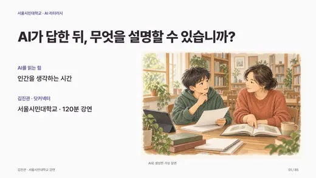
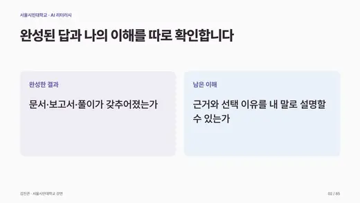
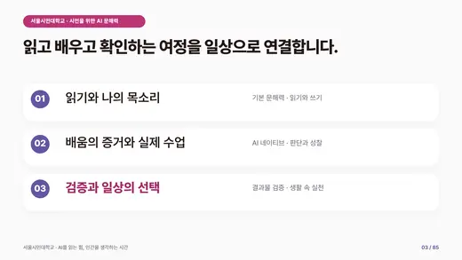
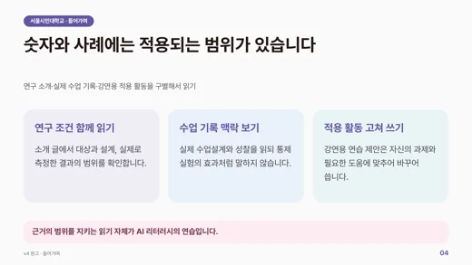
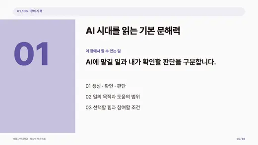
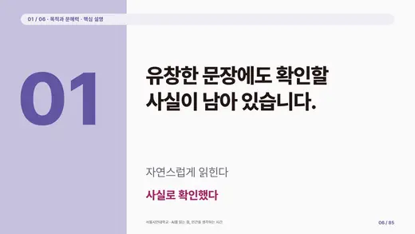
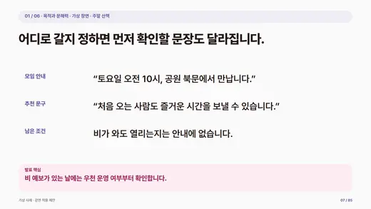
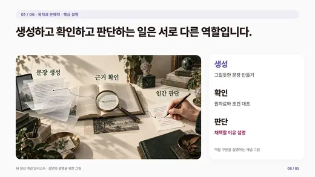
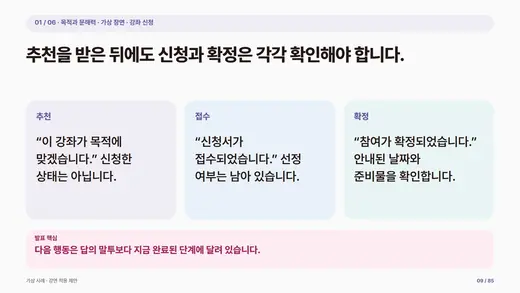
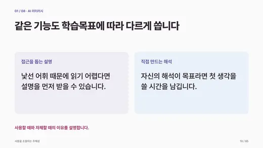
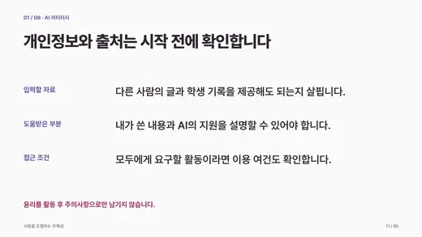
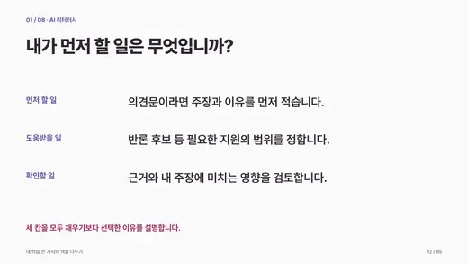
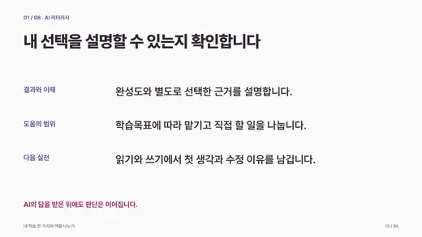
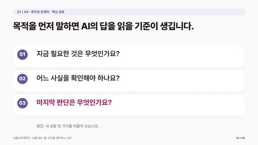
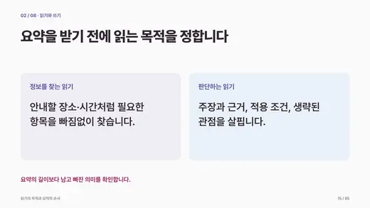
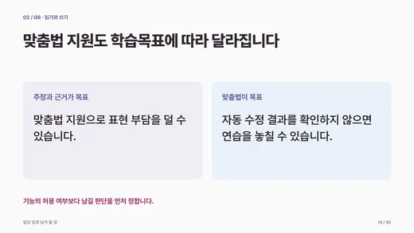
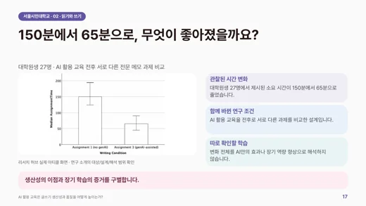
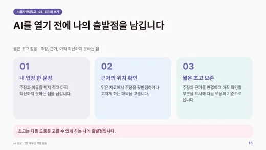
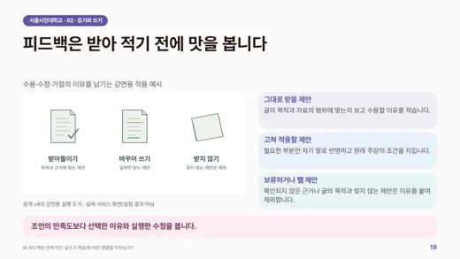
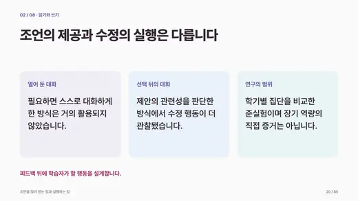
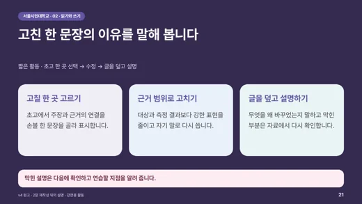
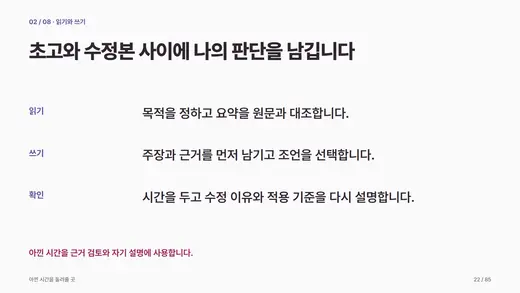
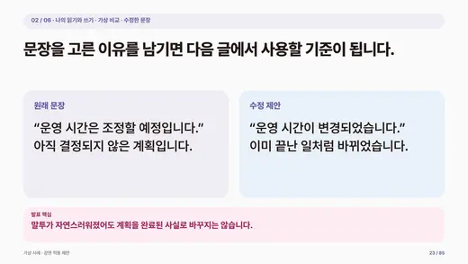
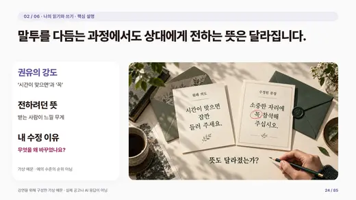
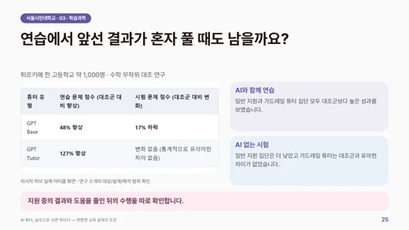
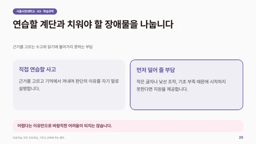
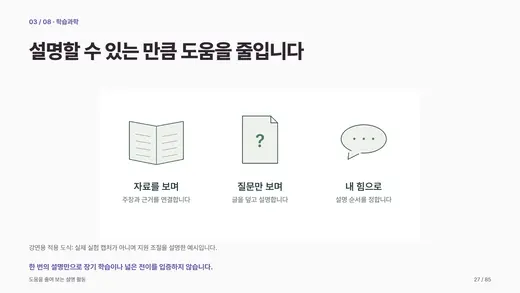
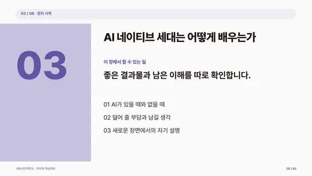
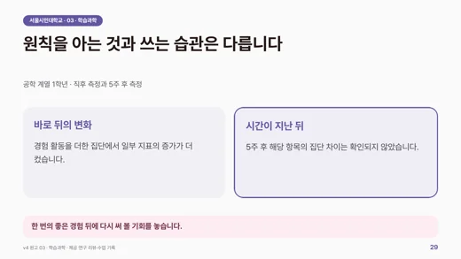
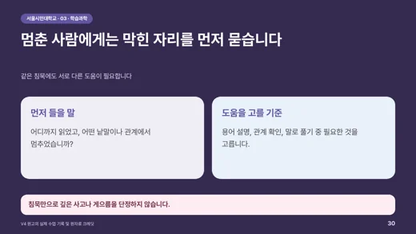
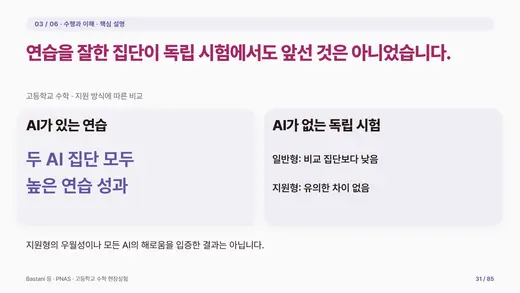
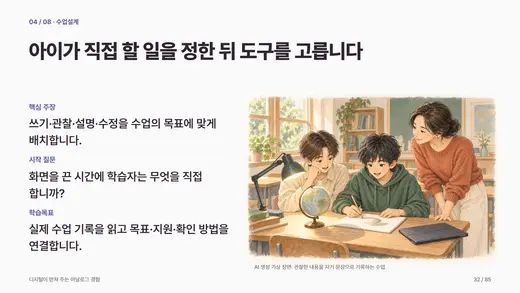
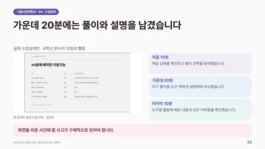
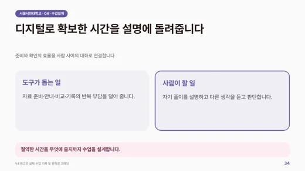
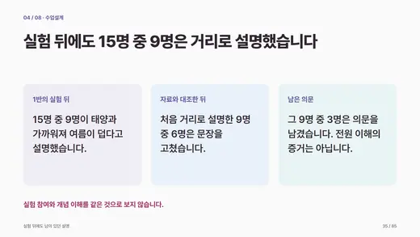
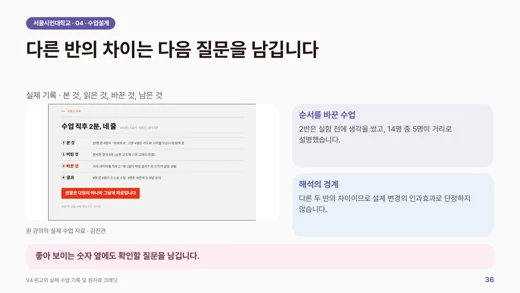
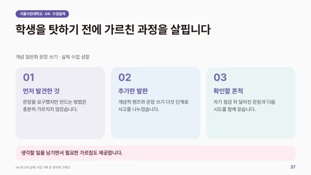
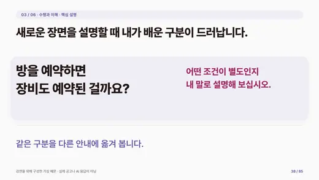
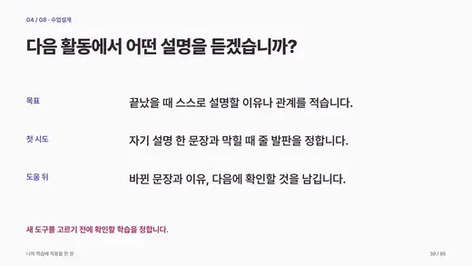
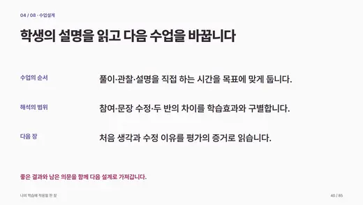
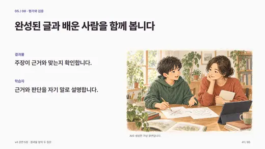
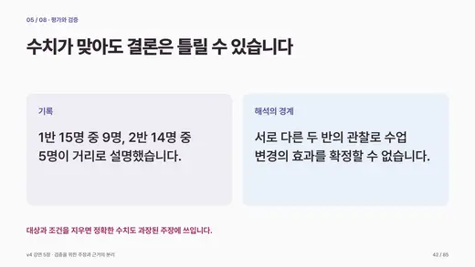
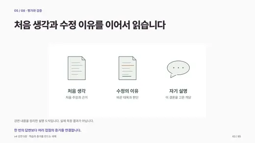
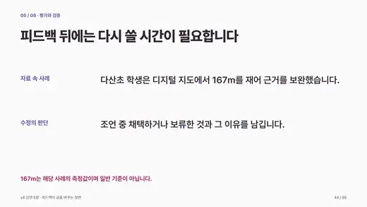
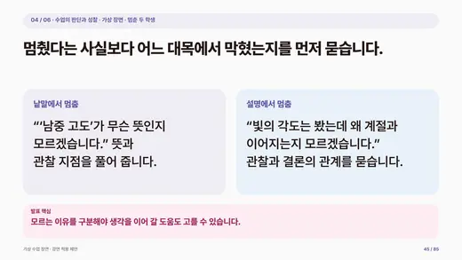
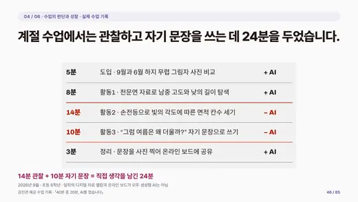
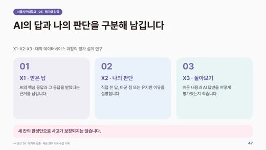
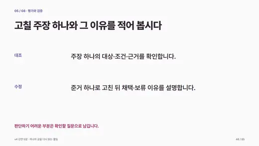
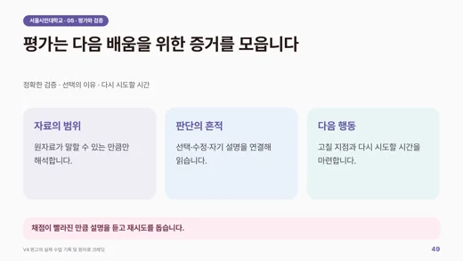
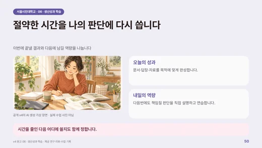
강연 자료 내려받기
PDF는 글꼴 설치 없이 읽을 수 있습니다.